BinnderDesigned and built · 13 min read
A phone cleaner where nothing is deleted the moment you swipe.
Binnder is an Android app I designed and built on my own. It shows your largest files one at a time, and you swipe to keep each one, move it to a bin or delete it for good.
- Role
- Design and build, solo
- Why
- A brief I set myself: clear space on a phone without losing the wrong file
- Platform
- Native Android, version 11 and newer
- Stack
- Kotlin, Jetpack Compose, Material 3, SQLite, WorkManager
- Timeline
- October 2026, versions 0.1.0 to 0.1.2
- Status
- Runs in an Android emulator. Not yet tested on a real phone, not published, no users

In short
- The problem: clearing storage is easy to rush, and one fast gesture on a file you did not really look at can lose it for good.
- What I built: a native Android app that shows one large file at a time, biggest first, with three swipes that have three different consequences.
- The key idea: no swipe touches a file straight away. Every deletion waits five seconds with its own Undo, binned files stay for 30 days, and only real deletions count as freed space.
- Where it stands: version 0.1.1 runs in an emulator and its rules have 23 automated tests. It has not been tried on a real phone or published, and it has no users.
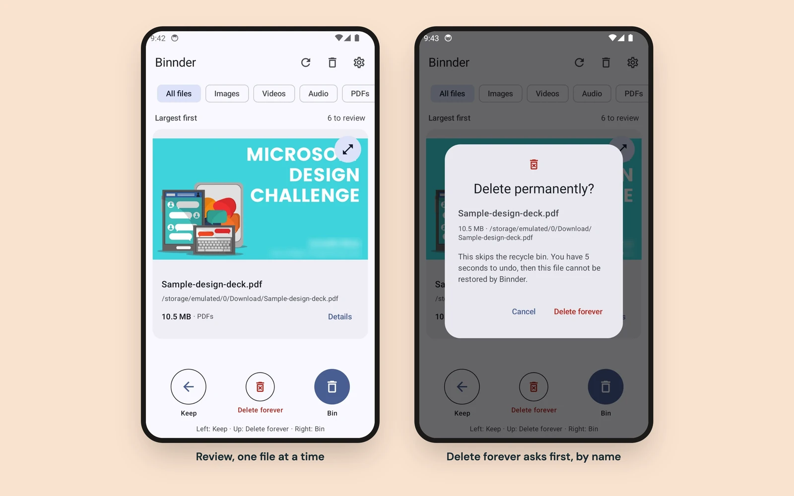
01 Why I built it
Clearing space is quick until the wrong file goes
Phones fill up with big files: videos, downloads, old documents. Clearing them is a chore, and a chore is easy to rush.
I wanted a tool that keeps the fast part fast and makes the dangerous part slow. You should see the file itself, know what each choice will do, and have a way back when you get it wrong.
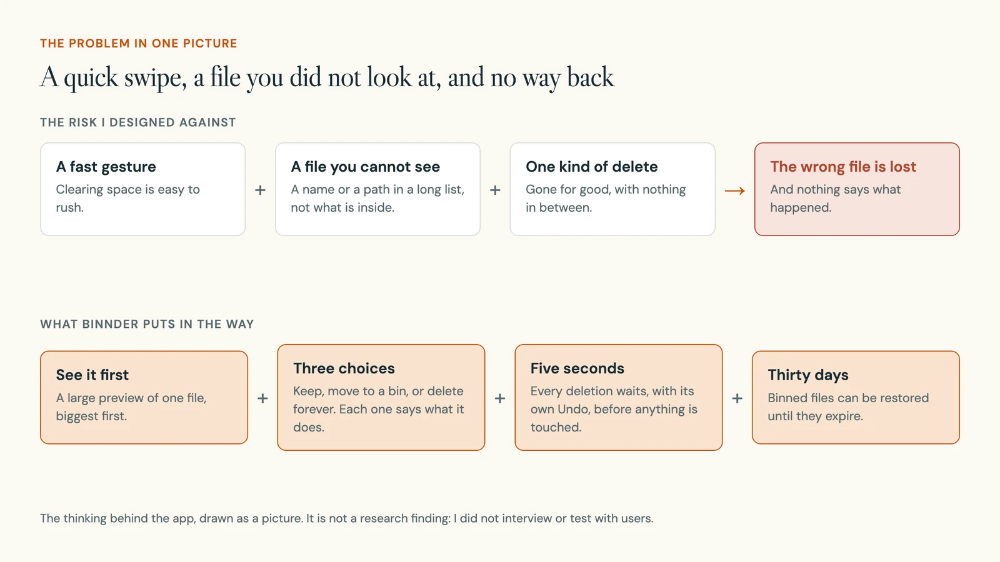
I set the brief myself and wrote four rules before drawing a screen:
- Show the file before any delete control.
- Keep routine swipes fast. Interrupt only for a choice that cannot be undone.
- If a move, a restore or a check fails, keep the data.
- No accounts, no analytics, no file uploads.
02 How it works
One file at a time, biggest first, three ways to decide
Binnder scans the phone's shared storage and any SD card, then shows files one at a time, largest first, because the biggest files free the most space. You can narrow the queue to images, videos, audio, PDFs or other files.
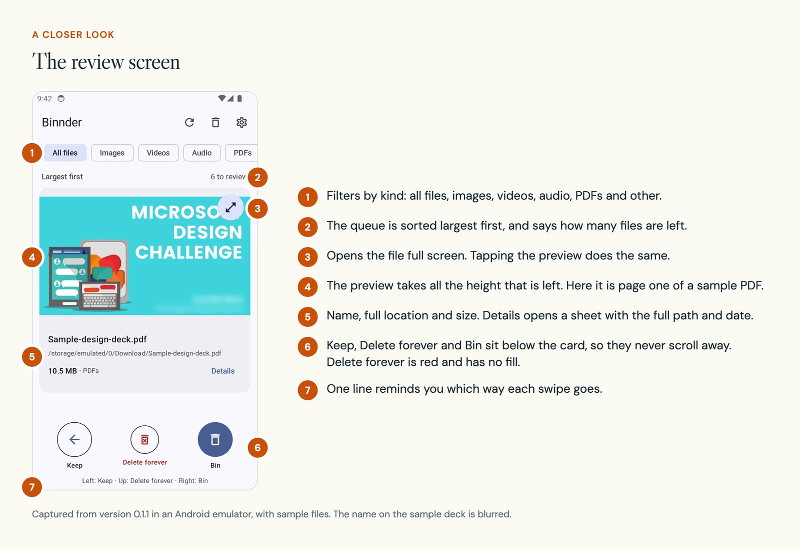
The preview is the point. Images and PDFs zoom with a pinch, every page of a PDF can be read, and video, audio and text play or show inside the app. Formats Android cannot draw open in another installed app.
Then you decide, with a swipe or a button.
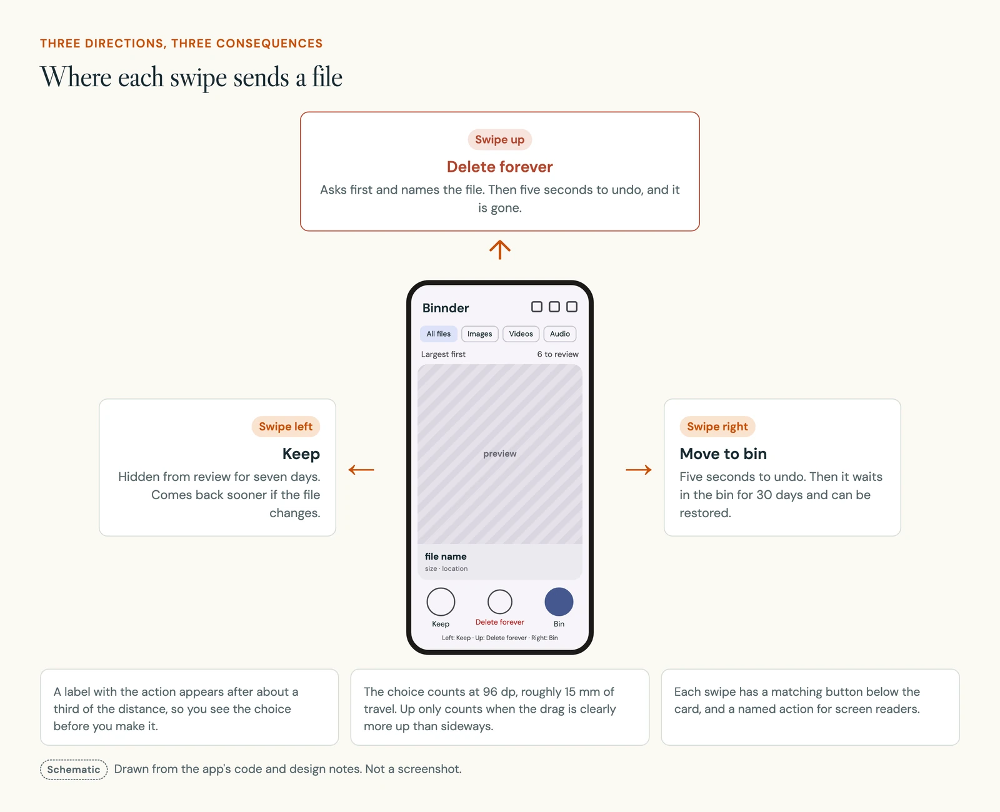
The three choices differ in what they cost you if you are wrong. Putting them side by side is how I worked out which one needed a question and which did not.
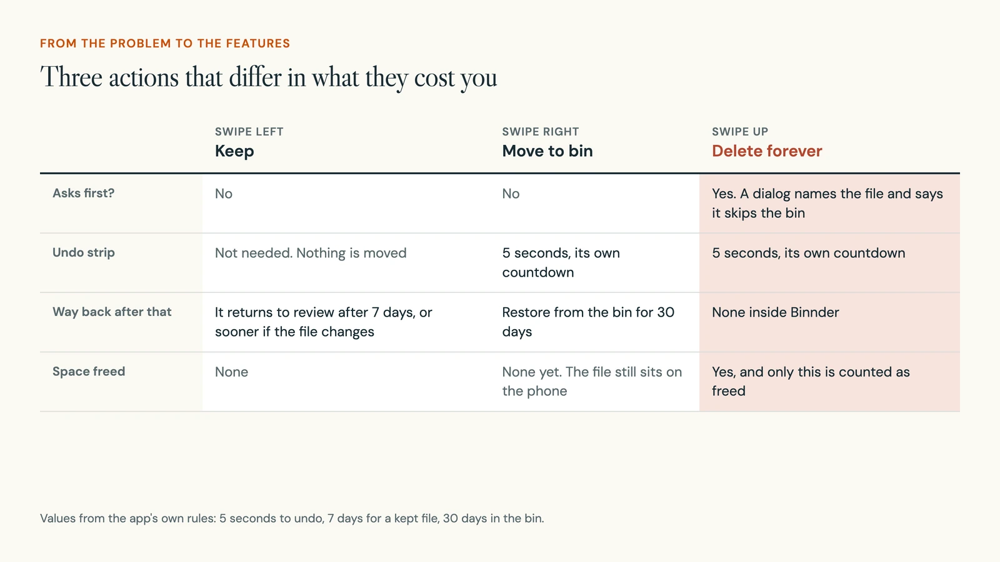
03 Decision 1
The file gets the screen, and everything else moves out of its way
What you see: the preview takes all the height left after the filters and the file name. Bin and Settings are icons in the top bar. There is no bottom navigation. The three buttons sit below the card and never scroll away.
In the build: version 0.1.0 had a bottom navigation bar and smaller previews. In 0.1.1 I removed the bar, made the previews bigger, and moved the full path and date into a Details sheet that opens on request. A sheet is a panel that slides up from the bottom of the screen.
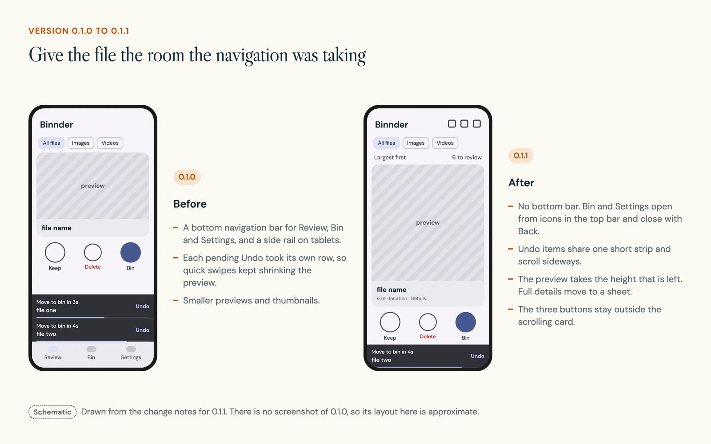
Speed matters when you look at file after file. The app draws the current file and the next two ahead of time, into a memory cache capped at 24 MB, and fades from one file to the next. A full-screen preview opens as its own screen, so a pinch or a scroll there is never read as a swipe.
04 Decision 2
Routine swipes stay fast. Only the one you cannot take back asks first
What you see: as you drag, the card follows your finger, tilts a little and shows a label with the action. Let go too early and it springs back.
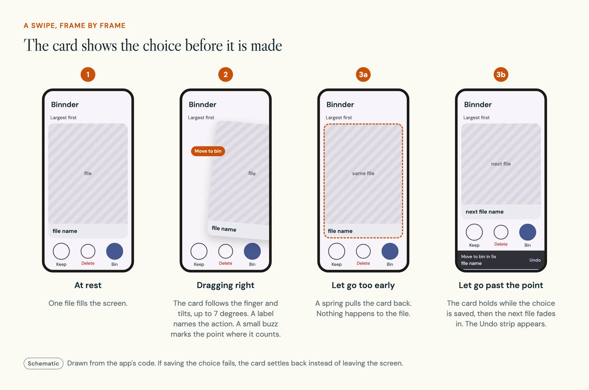
Keep and Bin happen as soon as you let go, because both can be undone. Delete forever opens a dialog that names the file and says what is different.
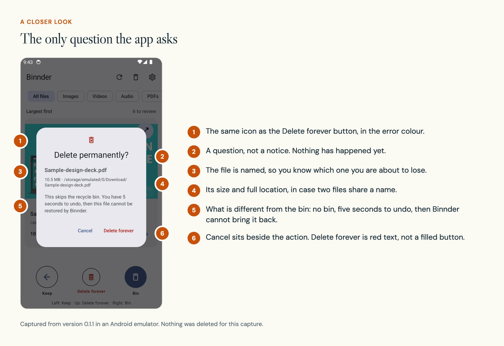
In the build: one distance decides every swipe, 96 dp. A dp is Android's unit for size on screen, the same physical size on every phone; 96 dp is about 15 mm. The label appears at a third of that distance.
An upward swipe only counts when the drag is at least 1.2 times more up than sideways, so a sloppy swipe to the side cannot turn into a permanent delete. A short vibration marks the point where the swipe counts, but it is never the only signal.
05 Decision 3
No deletion starts until five seconds have passed
What you see: after a swipe right or up, a dark strip appears at the bottom with the file's name, a countdown and Undo. Several actions can wait at once, each with its own countdown. The strip stays on screen in the bin, in Settings and in a full-screen preview.
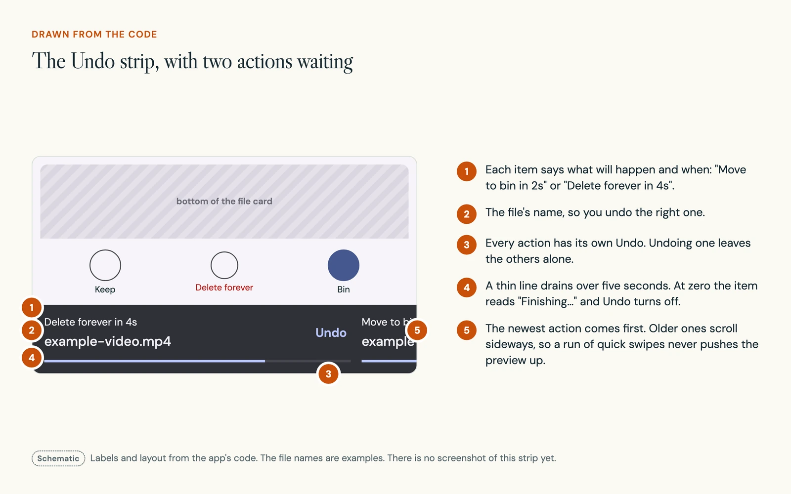
In the build: a swipe does not move or delete anything. It writes a record marked as pending in a small database on the phone. Undo removes the record, and the file was never touched. Only when the five seconds are up does the app check the file again and act.
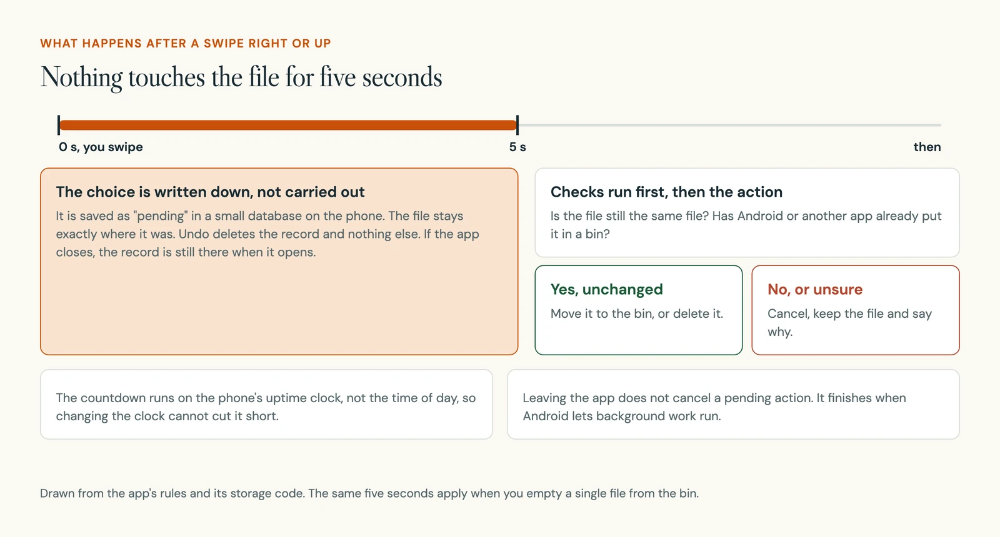
Two details took the most care. The countdown runs on the phone's uptime clock, together with a saved count of restarts, so changing the time of day cannot shorten it. And the pending records survive the app being closed, so closing the app neither skips the wait nor loses the choice.
06 Decision 4
The bin says plainly that binned files still take up space
What you see: the bin lists each file with the days left before it is deleted, and buttons to preview it, restore it or delete it for good. Its total says how much is in the bin and that this is still using storage. Settings counts only the bytes Binnder has really deleted.
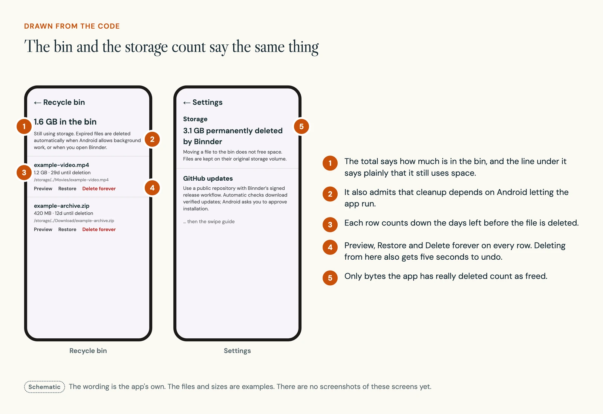
In the build: a binned file moves into a hidden folder on the same storage volume. The move is instant and never makes a second copy. It also means the space is not free yet, and counting it as freed would make the app look better while telling you something false.
Restore will not overwrite. If a new file now sits where the old one was, the restore stops and both files are kept. Thirty days after a file enters the bin, an hourly background job deletes it, and the app checks again whenever you open it.
One gap is spelled out in Settings. If you uninstall Binnder, the binned files stay on the phone, but the app's list of where each one came from is lost. So the app asks you to restore your bin first.
07 Decision 5
Files that are already in a bin never come back for review
What you see: nothing, which is the point. A photo you already deleted in your gallery app, or a file sitting in Samsung's My Files trash, should not appear again as something to decide about.
In the build: I added this filter in version 0.1.1. Android marks some deleted files as trashed while they keep a normal-looking name, and other apps keep their own recycle folders, so the app checks for both.
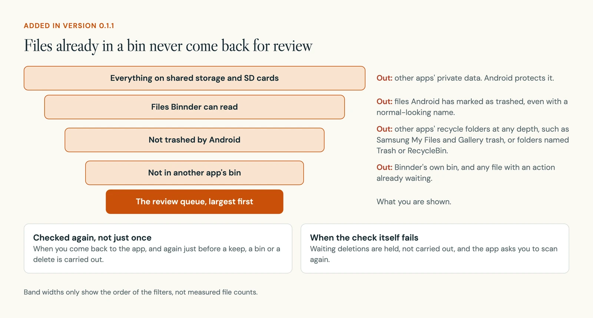
The check runs again when you come back to the app and right before any action is carried out. If the check itself fails, waiting deletions are held. The app does not act on a file it is unsure about.
08 The build
A small app, with most of its care spent on not losing files
Binnder is a native Android app in Kotlin, ten source files in all. Everything runs on the phone. The only use of the network is checking for updates.
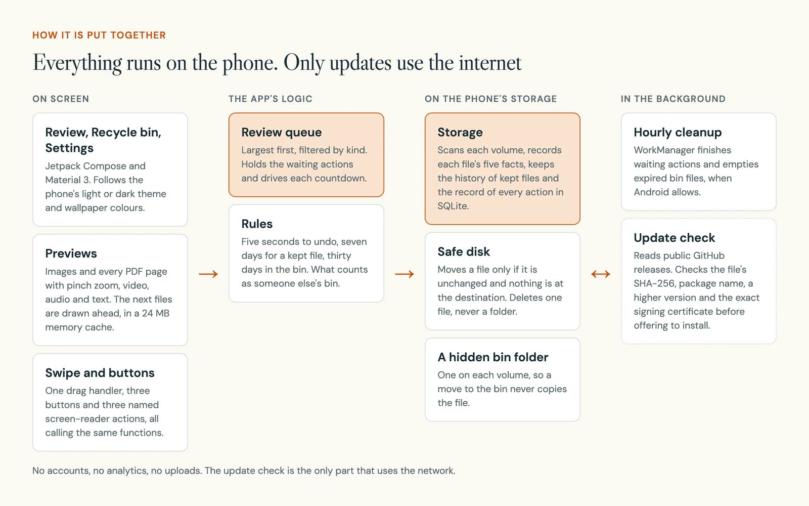
| Part | What I used |
|---|---|
| Language | Kotlin |
| Interface | Jetpack Compose and Material 3. It follows the phone's light or dark theme and wallpaper colours, with a teal fallback |
| Records | SQLite on the phone, for every waiting action, every bin entry and the history of kept files |
| Background work | WorkManager: cleanup every hour, update checks every 15 minutes from version 0.1.2 |
| Updates | Public GitHub releases, checked before Android is asked to install them |
| Oldest Android | Android 11 |
Every file action is a record that steps through a few named states. That is what lets the app recover if it is stopped halfway through a move.
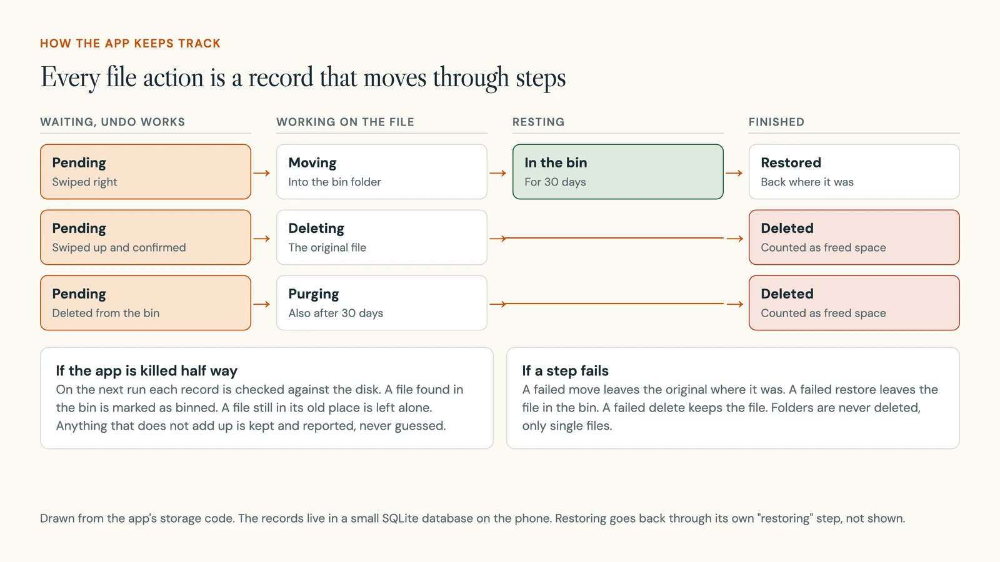
The other guard is what the app means by "the same file".
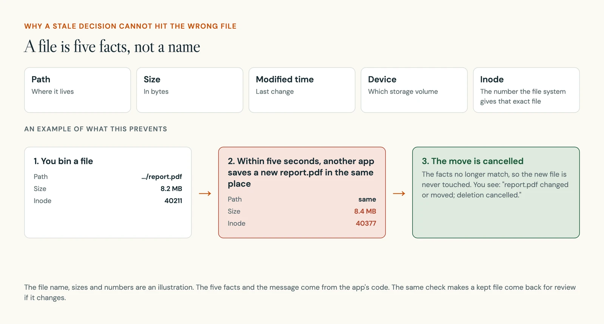
The rules are covered by tests that run on a computer. The checks that need a real phone are written down and not yet done.
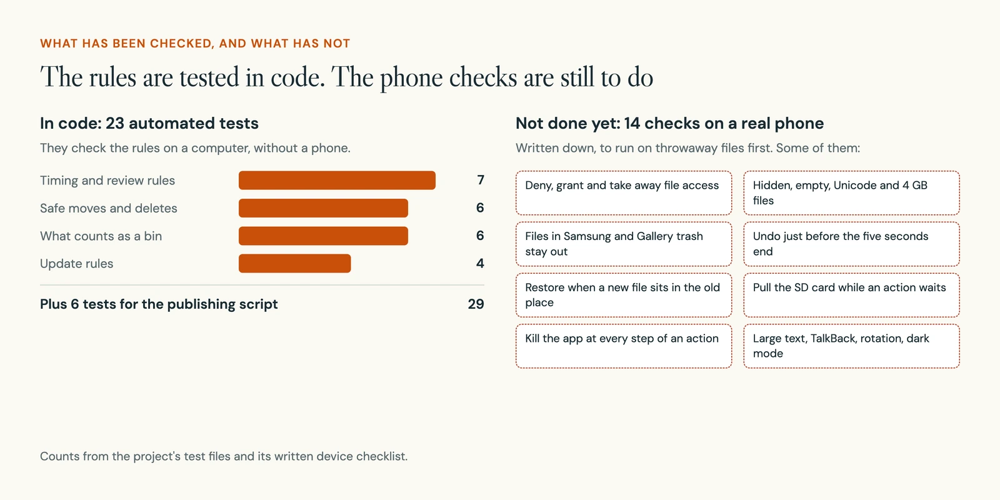
- 10
- source files, about 1,550 lines with the tests
- 23
- automated tests for the rules, plus 6 for the release script
- 3
- versions, 0.1.0 to 0.1.2, the last prepared but not released
- 14
- checks on a real phone, written and not yet run
The hardest problems were about what happens when things go wrong.
| Problem | What I did |
|---|---|
| The app is killed mid-action | On the next run, each record is checked against the disk. A file found in the bin is marked as binned, a file still in its old place is left alone, and anything that does not add up is kept and reported. |
| A file changes after the scan | Every move and delete first confirms the file's five facts. A new file saved at the same path is never touched. |
| A move fails | There is no fallback that copies and then deletes. The original stays where it was, and folders are never deleted, only single files. |
| Updates without a server | The app reads public GitHub releases and installs only when the file's SHA-256 checksum, the package name, a higher version number and the exact signing certificate all match. |
| Building without the usual tools | The machine I built on had no network access for Gradle, Android's standard build tool. I built the installable app straight from the Android SDK tools instead. A full Gradle build and lint pass are still to run. |
09 Accessibility
Every swipe also has a button and a named action
Swiping is hard for some people and impossible for others. Every gesture has a labelled button below the card. Screen readers get three named actions on the card itself: "Keep for seven days", "Move to recycle bin" and "Request permanent deletion". All of them call the same code as the swipe.
Vibration supports the visible label and never replaces it. The screens scroll when the text is set large, and stay clear of the phone's notches and rounded corners.
10 Where it stands
Built and tested in code, not yet on a real phone
Version 0.1.1 builds into an installable app and runs in an Android emulator, where the two screenshots on this page were taken with sample files. Version 0.1.2, which adds automatic update checks, is prepared but not released.
- It has not been tested on a real phone. I wrote 14 device checks, from refusing file access to pulling out the SD card mid-action, and none is recorded as done.
- It is not published, so there is no public download link.
- It has no users, and no numbers on files reviewed or space freed.
11 What is next
Run the phone checks, then put it in front of people
- Run the 14 device checks on throwaway files, starting with the ones that could lose data: a killed app, a removed SD card and a replaced file.
- Capture real screens of the bin, the Undo strip, a swipe in progress and the Details sheet, to replace the drawings on this page.
- Publish the signed release, so updates can reach installed copies.
- Then a small test with people: review a set of sample files, undo a mistaken swipe and restore a file, without help.
12 What I learned
Safety is mostly what happens after the tap
The swipe and the dialog were a few decisions. Most of the design sat behind them: the record for each action, the five facts that pin down a file, and the rule that a failed step keeps the data. A cleanup tool earns trust when it says what happened and keeps a way back, most of all when it could not finish.
I also learned to be exact about words. "Freed" has to mean freed. "Delete" had to split into two actions with different costs, because one word was hiding two decisions.
Find a sound you can adjust and keep.